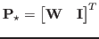
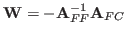
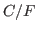

Given a coarse grid, the ideal prolongation operator is defined by

, where the weight matrix,
, interpolates a set of fine grid variable (
splittings and splittings corresponding to aggregates, for several challenging problems. We demonstrate the effects of the splitting on the convergence of multigrid hierarchies constructed with . Finally, we argue that may be misleading in demonstrating the ``ideal'' nature of interpolation of a given splitting by providing numerical evidence that hierarchies built from converge more slowly than hierarchies built from alternative prolongation operators with the same splitting. This is important as we wish to minimize the number of levels in a multigrid hierarchy by coarsening aggressively to yield a small set of C points for which may have relatively poor convergence.